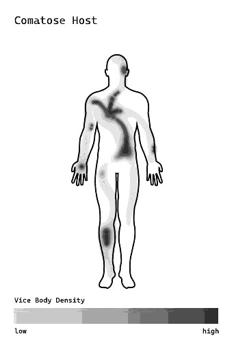
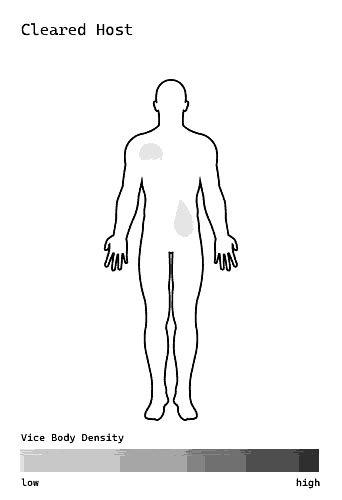

Host Phases
After Advent, Hosts are categorized into phases that predominantly guide an Intake Coordinator or Urgent Care team in determining treatment.
- ◎Latent
- ◈Active
- ⚠Berserk
- ☍Comatose
- ⛒Cleared
- Latent
- A phase typically only referred to in retrospect; experts refer to this phase when talking about Advent properties and any experiences that may influence a Vice’s Core
- Active
- Hosts are considered Active when their Vice has been detected via PI Scans. At this stage, Vices can be monitored via VIM Scans and observed through Blights or Branches. In this stage, the Vice Core is connected to the physical form of the Host, draining their energy. Now that the Vice is detectable, classification can occur based on the Vice’s behavior, seen primarily through Branches. Some Hosts find their Vice bearable and can self-manage, though treatment plans are offered at this phase for more well-researched Vices. Many Hosts do not initiate Rescission at this phase, though it is an option. A Host spends the majority of their Vice’s life cycle in the Active phase.
- Berserk
- Hosts in the Berserk phase are in danger of their Vice fusing with their physical form. The Vice has begun expanding its Core along the ionic tunnels stretched throughout the Host's body. The unpredictable reactions and emotions often present in this phase are the result of the body mounting an inflammatory response against the advancing Vice. Many Hosts in this phase experience agitated Blights, often thought to be a direct result of the body's inflammatory response. This phase is the result of an unaddressed Branch or the Advent of certain classifications, such as Lambda Vices. While it is possible to properly Commit the Branch and regress to the Active phase, the rate of success is generally lower while the Host is in the Berserk phase, and Rescission is highly recommended so as to prevent further progression. Committing the Branch is considered a temporary fix, while Rescission is the only way to fully Resolve the Vice. If the Branch goes unaddressed, a Host will progress to the Comatose phase as the Vice attempts to complete its fusion.
- Comatose
- This phase is the result of a Vice having fused its Core with over 75% of the Host, often shutting down motor control and flooding the Host's system with serotonin, often resulting in serotonin syndrome. Doing so has stretched the Vice Core extremely thin, in an attempt to achieve Propagation; although, due to this vulnerable state, Resolution is still achievable. If a Host is able to destroy a Vice’s Core during this phase, the Vice will be properly Resolved, but if a Host is unsuccessful, the Vice will complete the fusion process and begin the process of Propagation.
- Cleared
- A Cleared Host is the result of a successful Rescission, which is only achieved once the Vice Core is destroyed. In more extreme cases, trace amounts of a Vice’s ionic tunnels can still be detectable after Resolution and can contribute to lingering Blights, though these are not considered “live” fragments of the original Vice Core. Cleared Hosts do still have a risk of reignition, though it is uncommon.



